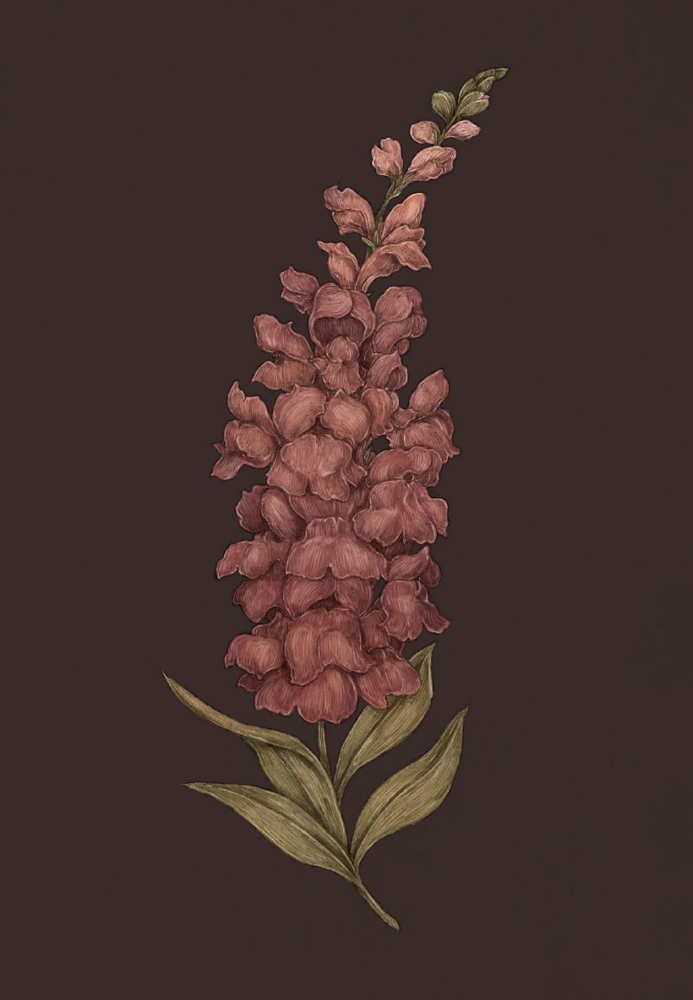

The Language of Flowers
Snapdragon

Snapdragon
Antirrhinum
Meaning
Presumption
Origin
Snapdragon's link to presumption may derive from a medieval fashion practice: maidens would wear
snapdragons in their hair to show they were not interested in unsolicited attention from men. The
flower warned young men against presumption in a subtle and elegant way.
Pair With
- Asphodel to apologize for a lack of discretion
- Holly to indicate your oversight will not happen again